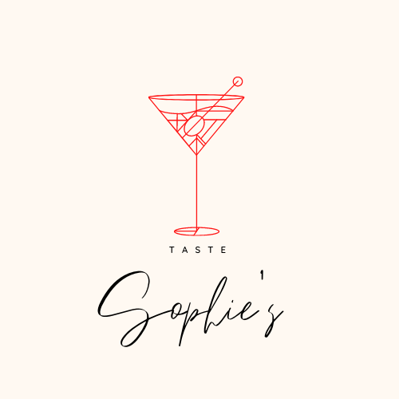

Sangria
Description
- Embrace balmy summer days with a jug of sangria. With red wine, Spanish brandy, sparkling water, cinnamon and chopped fruit, it's a lovely sharing cocktail
Ingredients
- 2 oranges , chopped
- 2 pears , chopped
- 2 lemons , 1 chopped, 1 juiced/li>
- 200g red berries , chopped (we used strawberries and cherries)
- 3 tbsp caster sugar
- 1 tsp cinnamon
- ice
- 750ml bottle light red wine
- 100ml Spanish brandy
- 300ml sparkling water
Method
- Put the chopped fruit in a bowl and sprinkle over the sugar and cinnamon, then stir to coat.
- Cover and leave to macerate in the fridge for at least 1 hr, or ideally overnight.
- Fill a large jug with ice.
- Stir the macerated fruit mixture to ensure the sugar is dissolved, then tip into the jug with the wine and brandy.
- Stir, then top up with the sparkling water and serve.